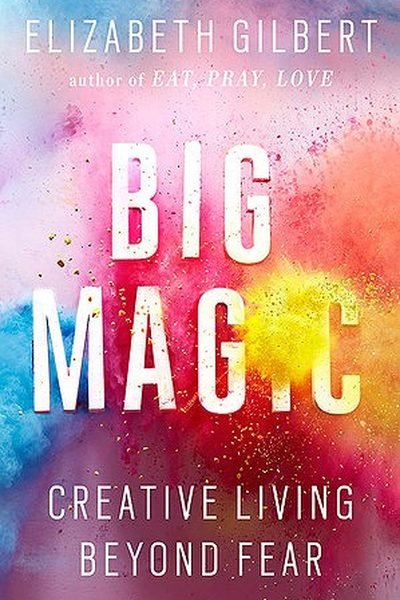

Library › Creativity
Big Magic — Summary & Key Lessons

Creative living is not a gift for tortured geniuses — it is available to anyone brave enough to show up.
📖 OPEN THE FULL INTERACTIVE BREAKDOWN →🌐 Read it in Hindi, Hinglish, Gujarati, Tamil & 22 more languages — free, with audio.
💡 The Big Idea
Gilbert dismantles the myth of the suffering artist: creativity is not a holy curse, it is a human birthright. Creative living means living with curiosity and courage — making things, even when no one is watching, because the making itself is the reward. Fear will never leave; your only job is to decide what you let it do. Show up, do the work, and trust that the universe loves a person with guts.
🧠 The 6 Key Lessons
Lesson 1: Creative Living Is for Everyone
Part 1: Courage
Creative living is not restricted to painters, poets or 'talented' people — it is any life guided more by curiosity than fear. You do not need permission, credentials or suffering to make things. The creative life is an amplified life, and it belongs to whoever decides to claim it.
📖 Example: Gilbert describes people who garden, cook, fix bikes, or invent games for their kids — none of them call themselves artists, yet all are living creatively. The moment you let curiosity drive a choice, you are creative. Read the full example →
⚡ Do this: Tonight, do one thing purely because you are curious — no goal, no audience, no permission. Notice how it feels.
Lesson 2: Fear Is Your Traveling Companion — Not Your Driver
Part 1: Courage
Fear never leaves; pretending otherwise is a lie. The goal is not to eliminate fear but to decide what role it plays. Gilbert pictures herself and fear on a road trip: fear rides in the back seat and can advise, but it never touches the wheel or the map.
📖 Example: Years after writing Eat, Pray, Love, Gilbert still got terrified before every book. She wrote fear a thank-you note and took the wheel anyway — courage is not the absence of fear but fear taking the back seat. Read the full example →
⚡ Do this: Write one sentence fear is telling you ('What if it's bad?'), then answer it: 'Noted. I'm driving.' Do the thing anyway.
Lesson 3: Ideas Are Alive — They Hunt for Partners
Part 2: Enchantment
Gilbert imagines ideas as living, roaming entities that choose a human partner to bring them into the world. When an idea knocks on your door and you are too scared or busy to answer, it does not wait forever — it moves on to someone else.
📖 Example: A friend of Gilbert's once told her a book idea that had been haunting her; she passed on it, and years later a famous author published that exact story. The idea simply found another host. Gilbert's example: the 'hunter' idea that knocked on the right door… Read the full example →
⚡ Do this: Keep a 'stolen ideas' note. Next time a big idea scares you, capture it immediately — and commit to answering the knock within 48 hours.
Lesson 4: Done Is Better Than Good
Part 3: Permission
Perfectionism is the enemy of output. Gilbert urges creators to stop polishing forever and simply finish — 'done is better than good.' A finished imperfect thing can live, grow and reach people; a perfect one that never ships is a corpse in a drawer.
📖 Example: Gilbert quotes her favourite mantra borrowed from her mother: a half-finished 'masterpiece' helps no one, but a completed 'flawed' song, cake or essay enters the world and becomes someone's favourite thing. Read the full example →
⚡ Do this: Set a finish date for one stalled project — then cut 30% of your 'polishing' time and ship it on that date, no excuses.
Lesson 5: The Universe Loves Guts
Part 4: Trust
Courage attracts support. When you commit to your creative work with sincerity, strange coincidences align — helpful people appear, doors open, luck follows. The universe may not hand you results, but it rewards audacity with momentum.
📖 Example: Gilbert tells of her aunt, a retired teacher who always wanted to travel but waited for perfect conditions. She died mid-trip-planning, and Gilbert's lesson: take the trip, write the book, ask the person — the world conspires with the brave. Gilbert's own… Read the full example →
⚡ Do this: Pick one 'someday' dream and take one real step this week — book the ticket, start the page, send the email.
Lesson 6: Creativity Lives in the Doing, Not the Waiting
Courage
Gilbert insists that inspiration is not a lightning bolt you wait for but a force you show up for: ideas are attracted to people who are working. The creative life is a series of small courageous acts — starting, sharing, finishing — performed before you feel ready. Waiting for the muse is the muse's favorite way to watch you do nothing.
📖 Example: Gilbert describes writing books she wasn't sure would work, showing up to the page daily, and letting the ideas find her mid-work. The projects she feared most became her best, because the fear didn't stop her from beginning. Read the full example →
⚡ Do this: Start the project you're waiting to 'feel ready' for today — even 20 minutes of imperfect beginning.
✅ 5-Step Action Plan
- Write your personal definition of creative living — it does not have to involve art.
- Give fear a seat in the back and name the thing it must never touch: the wheel.
- Capture your next 'knocking' idea and answer it within 48 hours.
- Pick one stalled project and set a hard finish date.
- Take one 'someday' step this week — the universe loves guts.
⚠️ When This Doesn't Work
Gilbert's 'creative living is permission, not talent' is the most freeing creativity book ever written — and Milli Vanilli is its warning: the duo lived the book's dream — fame, creativity, a Grammy — until the world discovered the 'creativity' was lip-synced, and the permission turned into public humiliation. Creative permission without creative honesty is just performance. Gilbert's magic is real; the magic only works when what you're showing is genuinely yours. Permission to create is not permission to fake.
💀 The Graveyard Proves It
🎙️ Milli Vanilli — The Grammy Won by Two Men Who Never Sang. Burn: Grammy revoked; careers erased. Read the full case study →
💬 Best Quotes from Big Magic
- “A creative life is an amplified life.”
- “Done is better than good.”
- “The universe buries strange jewels deep within us all, and then stands back to see if we can find them.”
Interactive version: mark lessons as read, listen in your language, share quote cards.